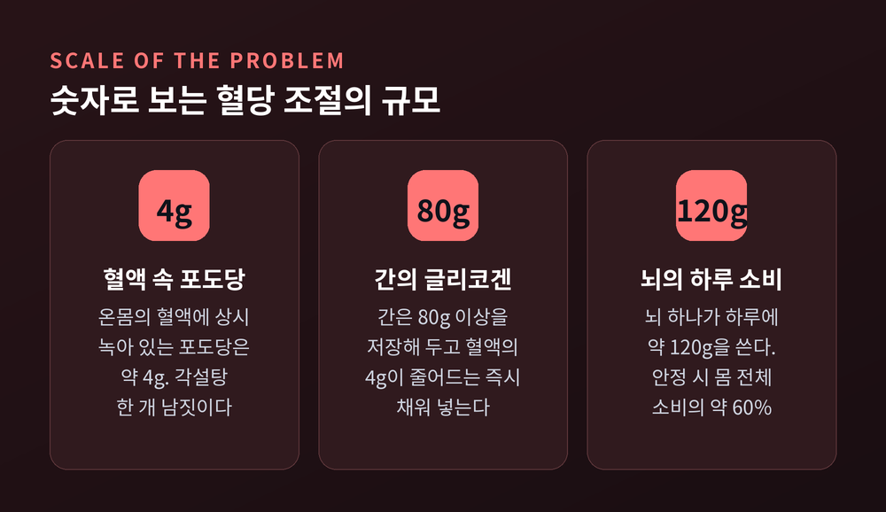
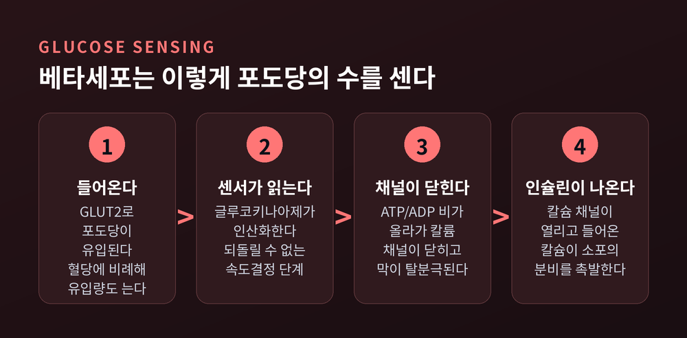
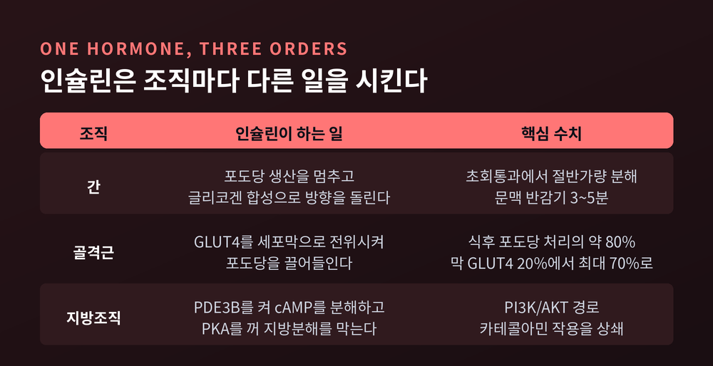
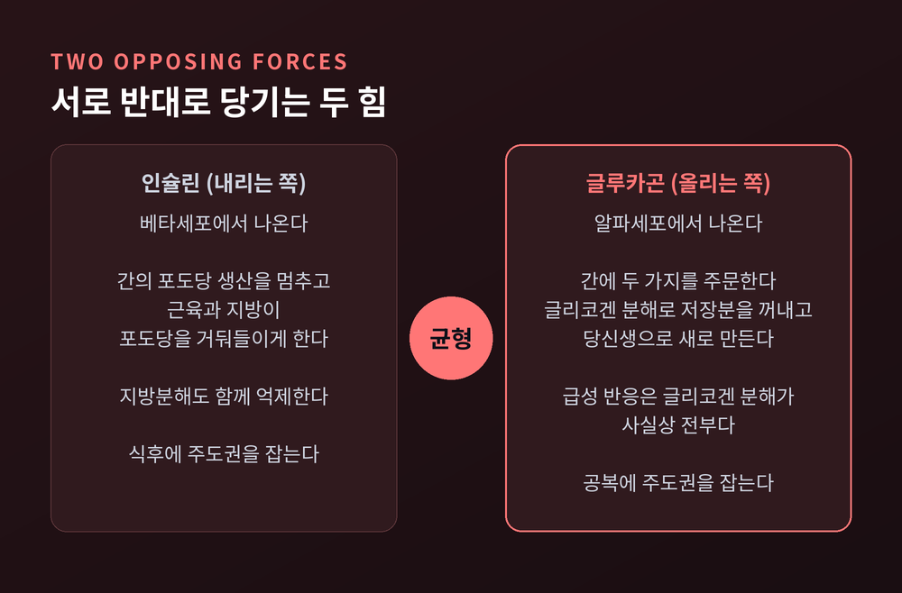
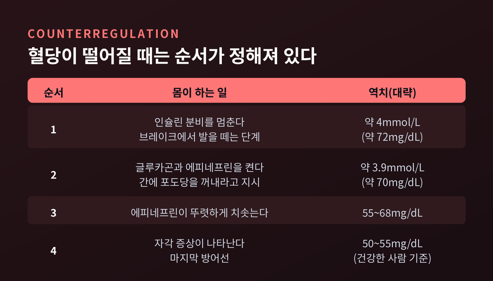
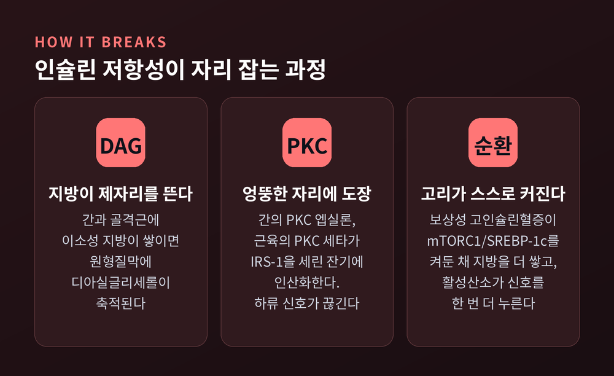

혈당 조절 원리, 인슐린과 글루카곤이 좁은 범위를 지키는 법
오늘은 혈당 항상성의 원리를 정리해 보려 합니다. 우리 몸은 하루 세 번 밥을 먹고도 혈당을 70~99mg/dL이라는 좁은 띠 안에 붙잡아 둡니다. 그 일을 인슐린과 글루카곤이 어떻게 나눠 맡는지, 세포 수준까지 내려가 살펴보겠습니다.
혈액에 녹아 있는 포도당은 겨우 4그램입니다
먼저 규모부터 잡아야 이야기가 선명해집니다.
성인의 혈액 전체에 상시 녹아 있는 포도당은 약 4g입니다. 각설탕 한 개 남짓입니다.
그런데 뇌 하나가 하루에 쓰는 포도당은 약 120g입니다. 안정 시 몸 전체 포도당 소비의 60% 정도를 뇌가 가져갑니다.
4g의 재고로 120g의 수요를 감당한다는 뜻입니다. 산술적으로 불가능한 일을 가능하게 만드는 것이 간입니다. 간은 80g 이상의 글리코겐을 쌓아두고, 혈액 속 4g이 줄어드는 즉시 채워 넣습니다. 조직이 가져가는 속도와 간이 내보내는 속도를 맞춰 혈당을 4.0~5.5mmol/L(70~100mg/dL)에 붙들어 둡니다.
공복일 때와 식후는 사정이 정반대입니다. 공복에는 간이 내보내고, 식후에는 근육과 지방이 거둬들입니다. 두 방향을 각각 지휘하는 호르몬이 글루카곤과 인슐린입니다.

베타세포는 이렇게 포도당의 수를 셉니다
췌장 랑게르한스섬의 베타세포는 혈당계를 몸속에 하나씩 갖고 있는 셈입니다. 순서는 이렇습니다.
첫째, 포도당이 GLUT2 수송체를 통해 촉진확산으로 들어옵니다. GLUT2는 포도당에 대한 친화도가 낮아 쉽게 포화되지 않습니다. 혈당이 오른 만큼 유입량도 비례해 늘어납니다. 농도계로 쓰기에 적합한 성질입니다.
둘째, 글루코키나아제가 들어온 포도당을 인산화합니다. 되돌릴 수 없는 단계이자 속도를 결정하는 단계입니다. 실질적인 센서는 여기입니다.
셋째, 미토콘드리아에서 피루브산이 산화되며 세포 안의 ATP/ADP 비가 올라갑니다.
넷째, 이 변화가 ATP 감수성 칼륨 채널(K_ATP)을 닫습니다. 채널 주변에서 ATP가 늘고 MgADP가 줄어드는 것이 직접적인 신호입니다.
다섯째, 칼륨이 빠져나가지 못하니 세포막이 탈분극됩니다. 전압의존성 나트륨 채널이 열려 탈분극이 한 번 더 깊어집니다.
여섯째, 전압의존성 칼슘 채널이 열리고 세포 밖 칼슘이 밀려 들어옵니다.
일곱째, 올라간 칼슘 농도가 인슐린이 담긴 소포의 세포외배출을 촉발합니다.
한 문장으로 줄이면 이렇습니다. "K_ATP 채널이 포도당 대사와 인슐린 분비를 물리적으로 잇는다." 대사량이 곧 전기신호가 되고, 전기신호가 곧 분비량이 됩니다.
여기에 더해 K_ATP와 무관하게 칼슘의 효과를 키우는 보강 경로도 따로 존재합니다. 방아쇠와 증폭기가 따로 있는 구조입니다.

인슐린은 두 번에 나눠 나옵니다
인슐린 분비 곡선은 밋밋한 언덕이 아닙니다. 봉우리가 두 개입니다.
1상은 빠르게 솟았다가 몇 분 만에 가라앉습니다. 이미 세포막에 붙어 대기하던 즉시분비풀(RRP) 과립이 한꺼번에 터지는 구간입니다. 이 풀은 전체 과립의 5% 미만에 불과합니다. 소방서 앞에 미리 세워둔 차량이라 보시면 됩니다.
2상은 낮지만 길게 이어집니다. 방출 지점에서 멀리 떨어져 있던 예비풀 과립을 끌어와 계속 내보내는 구간입니다.
1상은 세포 내 칼슘의 빠르고 뚜렷한 상승을 필요로 합니다. 즉각성이 이 구간의 존재 이유입니다. 혈당이 오르기 시작한 초기에 간의 포도당 생산을 재빨리 눌러야 하기 때문입니다.
이 1상이 먼저 무뎌지는 현상은 제2형 당뇨병에서 비교적 이른 시기에 관찰되는 변화로 논의됩니다.
인슐린은 조직마다 다른 일을 시킵니다
인슐린은 하나의 명령을 뿌리지 않습니다. 조직마다 주문이 다릅니다.
간은 첫 관문입니다. 분비된 인슐린은 문맥을 타고 간세포에 먼저 도달하고, 그 과정에서 절반가량(많게는 80%)이 초회통과 중에 분해됩니다. 그래서 전신 순환의 인슐린 농도는 문맥 농도의 3분의 1 수준입니다. 문맥에서의 반감기는 3~5분에 지나지 않습니다. 간은 이 신호를 받아 포도당 생산을 멈추고 글리코겐 합성으로 방향을 돌립니다.
골격근은 식후 포도당 처리의 약 80%를 담당하는 최대 소비처입니다. 관건은 GLUT4의 전위입니다. GLUT4는 평소 세포 안 소포에 접혀 있다가 인슐린 자극을 받으면 원형질막으로 이동합니다. 인슐린이 없을 때 막에 나와 있는 GLUT4는 세포 전체의 약 20%, 인슐린 농도가 매우 높을 때는 약 70%까지 올라갑니다. 문이 몇 개 더 열리는 정도의 변화로 식후 고혈당을 막습니다.
지방조직에서는 방향이 반대입니다. 인슐린은 PI3K/AKT 경로를 거쳐 PDE3B를 활성화하고, cAMP를 분해해 PKA를 끕니다. 결과는 지방분해 억제입니다. 카테콜아민이 밀어붙이는 지방분해를 상쇄하는 능력이 지방조직에서 인슐린 작용의 정의라 할 만합니다.

글루카곤은 간에 두 가지를 주문합니다
혈당이 내려가면 알파세포가 글루카곤을 내보냅니다. 받는 쪽은 거의 전적으로 간입니다.
주문은 두 가지입니다. 글리코겐 분해로 저장분을 꺼내는 일, 그리고 당신생으로 새 포도당을 만드는 일입니다. 동시에 해당과정과 글리코겐 합성은 억제합니다. 창고 문을 열면서 입고를 막는 셈입니다.
시간 축을 나눠 봐야 정확합니다. 생리적 수준의 글루카곤 상승에 대한 급성 반응은 사실상 글리코겐 분해가 전부입니다. 당신생에 대한 즉각적 효과는 거의 없습니다. 반면 밤샘 공복처럼 시간이 지나면 글리코겐 분해와 당신생의 기여도가 대체로 비슷해집니다. 공복이 더 길어져 글리코겐이 바닥나면 당신생이 주역을 넘겨받습니다.
공복 상태에서 글루카곤은 혈중 농도 20pmol/L 미만의 기저 수준으로 조용히 흐릅니다. 이 기저 글루카곤이 기저 인슐린과 균형을 이루어 정상상태를 만듭니다. 두 호르몬이 서로를 밀어내며 만드는 팽팽한 정지 상태가 우리가 아는 '안정된 공복혈당'의 정체입니다.
섬 안에서는 세 종류의 세포가 서로 신호를 주고받습니다. 델타세포의 소마토스타틴은 인슐린과 글루카곤을 모두 강하게 억제합니다. 글루카곤은 인슐린·소마토스타틴 박동과 역위상으로 분비되며, 이 관계는 제2형 당뇨병과 당뇨병 전단계에서 흐트러집니다. 다만 인슐린이 알파세포를 직접 누르는지 간접적으로 누르는지는 아직 견해가 갈립니다.

장이 췌장에 미리 소식을 전합니다
같은 양의 포도당이라도 입으로 먹었을 때와 정맥으로 넣었을 때 인슐린 반응이 다릅니다. 경구 쪽이 훨씬 큽니다. 이 차이를 인크레틴 효과라고 부릅니다.
크기가 작지 않습니다. 건강한 사람에서 경구 포도당에 대한 인슐린 반응의 50~70% 안팎을 인크레틴 효과가 담당합니다.
주역은 장에서 나오는 GLP-1과 GIP입니다. 역할이 갈립니다. GIP는 인슐린 분비를 늘리는 쪽에 더 크게 기여하고, GLP-1은 글루카곤 분비를 억제하는 쪽에 더 크게 관여합니다.
주목할 성질은 포도당 의존성입니다. GIP의 정식 이름 자체가 '포도당 의존성 인슐린분비촉진 폴리펩타이드'입니다. 혈당이 낮을 때는 이 신호가 작동하지 않습니다. 음식이 들어왔다는 소식을 장이 먼저 전하되, 필요할 때만 전한다는 뜻입니다.
이 효과는 제2형 당뇨병에서 크게 줄거나 사라집니다.
떨어질 때는 순서가 정해져 있습니다
올라갈 때보다 내려갈 때가 더 위급합니다. 그래서 방어는 계층적으로 짜여 있습니다.
가장 먼저 인슐린 분비가 멈춥니다. 브레이크에서 발을 떼는 단계이고, 역치는 약 4mmol/L(약 72mg/dL)입니다.
다음이 호르몬 동원입니다. 글루카곤과 에피네프린이 약 3.9mmol/L(약 70mg/dL)에서 켜집니다. 혈당이 55~68mg/dL까지 내려가면 에피네프린이 뚜렷하게 치솟습니다.
증상은 가장 늦게 나옵니다. 건강한 사람의 증상 역치는 50~55mg/dL 부근입니다. 몸은 자각 증상을 마지막 방어선으로 남겨 둡니다.
다만 이 숫자들을 고정값으로 받아들이시면 곤란합니다. 역치는 개인마다 다르고, 같은 사람 안에서도 이전의 저혈당·고혈당 경험, 나이, 당뇨병 유병 기간에 따라 움직입니다.

이 균형은 어떻게 무너지는가
인슐린 저항성은 어느 날 갑자기 생기지 않습니다. 지질에서 출발합니다.
간과 골격근처럼 인슐린에 반응해야 할 조직에 지방이 제자리를 벗어나 쌓입니다. 이소성 지방입니다. 그러면 원형질막에 디아실글리세롤(DAG)이 축적됩니다.
축적된 DAG가 인산화효소를 깨웁니다. 간에서는 PKCε, 골격근에서는 PKCθ입니다.
깨어난 효소는 IRS-1을 세린 잔기에서 인산화합니다. 원래 활성화 신호는 티로신 인산화입니다. 엉뚱한 자리에 도장을 찍는 셈입니다. IRS-1은 프로테아좀에서 분해되고, 하류 신호는 거기서 끊깁니다.
그다음이 문제입니다. 신호가 잘 안 통하니 췌장은 인슐린을 더 뽑아냅니다. 보상성 고인슐린혈증입니다. 높아진 인슐린은 mTORC1/SREBP-1c 축을 계속 켜두고, 지방산 합성과 중성지방 축적을 몰아붙입니다. 간 지방증이 깊어집니다. 여기에 NADPH 산화효소 활성이 올라가며 만들어진 활성산소가 JNK/IKKβ 경로를 통해 인슐린 신호를 한 번 더 누릅니다.
저항성이 고인슐린혈증을 부르고, 고인슐린혈증이 저항성을 키웁니다. 스스로를 강화하는 고리입니다.

숫자로 보는 기준선
기준 수치는 알아두시면 도움이 됩니다. 미국당뇨병학회(ADA) 2026 진료지침과 대한당뇨병학회 기준은 서로 일치합니다.
당뇨병 전단계는 공복혈당 100~125mg/dL(공복혈당장애), 75g 경구당부하검사 2시간 혈당 140~199mg/dL(내당능장애), 당화혈색소 5.7~6.4%로 정의됩니다.
당뇨병은 공복혈당 126mg/dL 이상, 2시간 혈당 200mg/dL 이상, 당화혈색소 6.5% 이상이 기준입니다. 다뇨·다음·원인불명의 체중감소 같은 증상과 함께 무작위 혈당이 200mg/dL 이상인 경우도 포함됩니다.
참고로 당뇨병이 없는 사람은 식사 시작 후 대략 1시간에 정점을 찍고 2~3시간 안에 기저치로 돌아옵니다. 정점도 대개 140mg/dL 아래에 머뭅니다.
한 가지 덧붙이면, 이 숫자들은 판단의 재료이지 판단 자체는 아닙니다. 진단은 반복 검사와 임상 판단을 거쳐 이루어집니다.
정리하면 이렇습니다.
혈당 항상성은 하나의 강력한 장치가 아니라, 서로 다른 시간 척도를 가진 여러 겹의 장치가 포개진 결과입니다. 몇 초 단위로 반응하는 K_ATP 채널, 몇 분 단위로 움직이는 인슐린 1상 분비, 몇 시간을 버티는 간의 글리코겐, 며칠을 감당하는 당신생이 각자의 자리에서 겹쳐 있습니다.
"안정은 정지가 아니라, 반대 방향으로 당기는 두 힘의 균형입니다."
그래서 이 시스템은 조용할 때 가장 잘 작동합니다. 우리가 혈당을 의식하지 않고 하루를 보낼 수 있다는 사실 자체가, 이 겹겹의 장치가 제 몫을 하고 있다는 증거입니다.
다만 이 글은 생리학 원리를 정리한 것이지 진단이나 치료를 위한 조언이 아닙니다. 갈증이나 잦은 소변, 원인 모를 체중 감소 같은 증상이 있거나 검진 수치가 마음에 걸리신다면, 인터넷 검색으로 결론을 내리지 마시고 반드시 의료진과 상담하시길 권합니다.
몸이 매일 조용히 해내는 일을 한 번쯤 들여다볼 가치는 충분하다고 생각합니다.